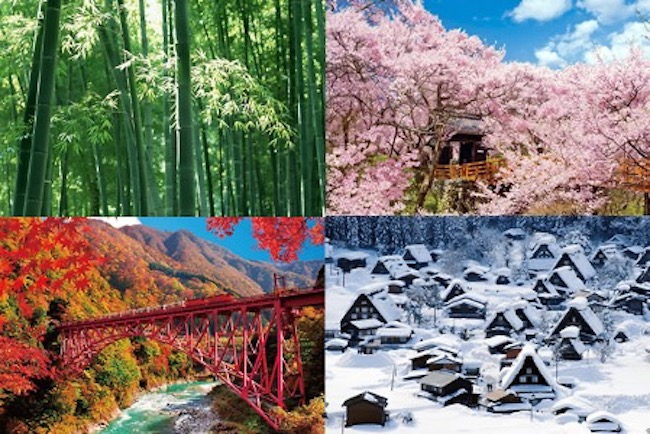
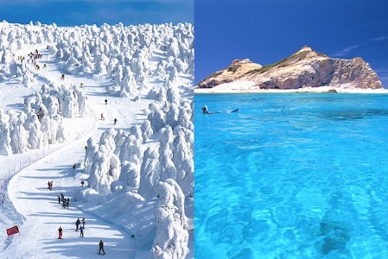

Climate

Beautiful four distinct seasons of Japan
Japan is an island country with long archipelago extending from south to north; its climate varies from subtropical zone to sub-polar zone, while major part of Japan belongs to temperate zone with four distinct seasons. Japanese four seasons has beautiful contrast between each season, as a result of the “Monsoon (seasonal wind)” and two major oceanic currents. In regard to the Monsoon, southeasterly wind comes from the Pacific Ocean side in summer time, and northwesterly wind comes from the Siberian continent side in winter time. Also, the warm Kuroshio Current (also known as the Japan Current) flows northward on the Pacific side, warming areas as far north as Tokyo, and the cold Oyashio Current (also known as the Okhotsk Current) flows southward along the northern Pacific, cooling adjacent coastal areas. The intersection of these currents is a bountiful fishing ground.
Japan is among the snowiest and rainiest countries
The average winter temperature in Japan is 5.1 °C and the average summer temperature is 25.2 °C. The highest temperature ever measured is 40.9 °C and the lowest temperature ever measured is -41.0 °C. The main rainy season begins in early May in Okinawa, and the rain front gradually moves north until reaching Hokkaido in late July. In most of Honshu, the rainy season begins before the middle of June and lasts about six weeks. In late summer and early autumn, five or six typhoons pass over or near Japan every year, sometimes resulting in significant damage. Annual precipitation averages between 1,000 and 2,500 mm except in the hyper-humid Kii Peninsula where it can reach 4,000 mm, which is the highest rainfall in subtropical latitudes in the world.

Only few countries have this much varied climate
Japan’s climate varies greatly with altitude and with location on the Pacific Ocean side or on the Sea of Japan side. Northern part of Japan has warm summers but long, cold winters with heavy snow. Central part of Japan in its elevated position has hot, humid summers and moderate to short winters with some areas having very heavy snow, and southwestern part of Japan has long, hot, humid summers and mild winters. As a result of this very much different climate in a country, Japan is well-known for its biodiversity and cultural diversity comparing to other same size nation.